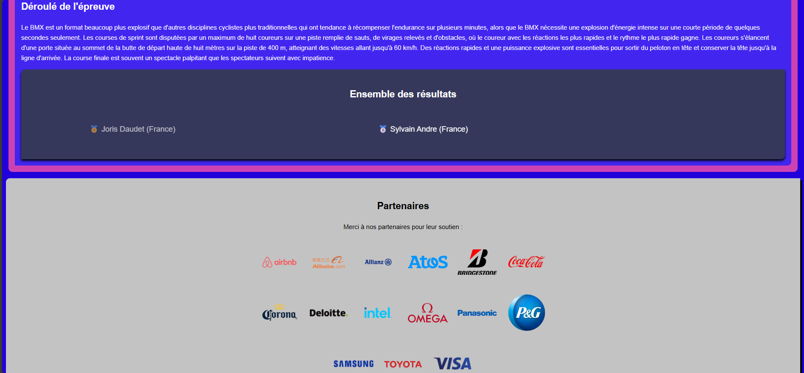
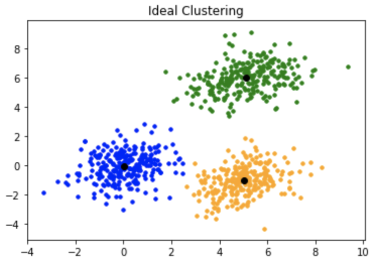

Projets
SAE : conception d'une base de données en UML
Grâce à une image UML nous l'avons traduite en langage SQL et ensuite codée sur SQL Workbench.

SAE : développement d'un site web sur les JO de Paris 2024
Nous avons réaliser un site web sur les JO de Paris 2024 sur la discipline du BMX Racing.

SAE : Jeu du Snake
Lors de ce projet, nous avons dû réaliser le jeu du snake en plusieurs versions avec à chaque étape un nouveau défi à réaliser
Site Web personnel
Réalisation d'un site web en HTML/CSS présentant mon parcours et mes projets.

SAE : Exploration algorithmique d'un problème
Le projet constitut à étudier et réaliser des algorithmes, avec l'algorithme des K plus proches voisins (k-means)
SAE : Installation de services réseau
nous avons dù apprendre à configurer un serveur web Apache avec PHP et MySQL